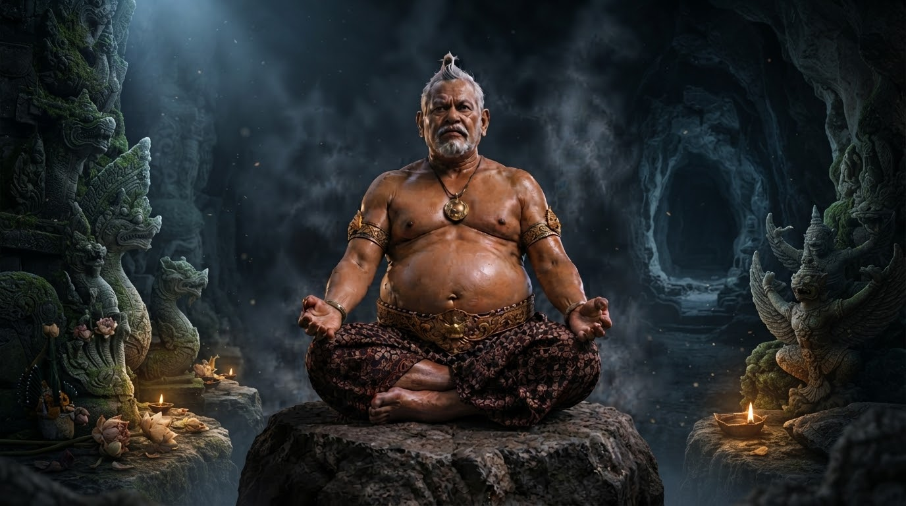

NAWA SEMBAH UTTAMOPADESA

Pengertian dan Landasan Pemikiran.
Nawa Sembah Uttamopadesa adalah pola sembah yang dirumuskan oleh Dhimas Purnomo dalam kerangka pemikiran Kawruh Uttamopadesa. Pola ini terdiri atas sembilan tataran pangabekti yang menggambarkan perkembangan manusia dalam menata dan menyelaraskan unsur-unsur kehidupannya, mulai dari raga, cipta, rasa, karsa, budi, sukma, kawruh, hingga pemahaman tentang jatining dhiri. Seluruh proses tersebut diarahkan menuju keselarasan dengan karsaning Hyang Manon.
Nawa Sembah Uttamopadesa menempatkan sembah bukan semata-mata sebagai pemujaan atau pelaksanaan ritual, melainkan sebagai pangabekti yang diwujudkan melalui sikap, perilaku, keputusan, dan laku kehidupan sehari-hari. Dengan demikian, nilai sembah tidak hanya dinilai dari tindakan lahiriah, tetapi juga dari kejernihan cipta, ketulusan rasa, keluhuran karsa, serta kesungguhan seseorang dalam menjalani kehidupan.
Nawa Sembah Uttamopadesa merupakan konsep tersendiri. Konsep ini bukan Nawa Widha Bhakti, bukan terjemahan Nawa Widha Bhakti, dan tidak dirumuskan sebagai turunannya. Meskipun keduanya sama-sama menggunakan jumlah sembilan dan berkaitan dengan pengertian bakti, keduanya memiliki susunan, landasan pemikiran, dan fungsi konseptual yang berbeda.
Sembilan Tataran Nawa Sembah Uttamopadesa.
1. Sembah Raga.
Sembah Raga merupakan tataran pertama dalam Nawa Sembah Uttamopadesa. Pada tataran ini, raga ditata agar bersih, tertib, sehat, dan digunakan untuk melakukan tindakan yang baik serta bermanfaat. Pangabekti mulai diwujudkan melalui perilaku nyata, tanggung jawab, kedisiplinan, dan kesungguhan dalam menjalankan kewajiban.
Penataan raga menjadi dasar karena pemahaman yang baik perlu diwujudkan dalam tindakan. Sembah tidak cukup berhenti sebagai niat atau ucapan, tetapi harus terlihat dalam cara seseorang menggunakan tubuhnya untuk menjalani kehidupan.
2. Sembah Cipta.
Sembah Cipta merupakan penataan pikiran agar tidak dikuasai kesombongan, prasangka, iri hati, kebencian, dan pandangan yang menyimpang dari kenyataan. Cipta yang jernih memungkinkan seseorang memahami keadaan dengan lebih tepat serta mempertimbangkan persoalan tanpa tergesa-gesa.
Penataan cipta juga menuntut kesediaan untuk memeriksa pikiran sendiri. Seseorang tidak semestinya menganggap setiap pikirannya benar hanya karena pikiran itu berasal dari dirinya. Kejernihan cipta menjadi landasan bagi pertimbangan dan tindakan yang bertanggung jawab.
3. Sembah Rasa.
Sembah Rasa merupakan penjernihan perasaan agar tumbuh menjadi kepekaan, kasih, ketulusan, dan welas asih. Rasa diarahkan supaya seseorang mampu memahami keadaan sesama tanpa dikuasai kebencian, kepentingan pribadi, atau keinginan untuk merendahkan orang lain.
Sembah Rasa bukan berarti menuruti setiap perasaan yang muncul. Perasaan perlu dikenali dan ditata agar tidak menguasai pertimbangan maupun tindakan. Ketulusan rasa tercermin dalam kemampuan memperlakukan sesama dengan hormat dan memahami kehidupan secara lebih luas.
4. Sembah Karsa.
Sembah Karsa merupakan penataan kehendak dan dorongan yang menggerakkan tindakan. Karsa tidak dibiarkan hanya mengejar kepentingan diri sendiri, melainkan diarahkan kepada kebaikan, keselarasan, dan manfaat bagi kehidupan.
Pada tataran ini, seseorang belajar membedakan keinginan pribadi dari kehendak yang layak diwujudkan. Karsa yang tertata tidak hanya mempertimbangkan apa yang ingin dicapai, tetapi juga tujuan, cara, dan akibat dari tindakan yang dilakukan.
5. Sembah Budi.
Sembah Budi merupakan pengembangan daya pertimbangan untuk membedakan yang benar dan keliru, yang utama dan tidak utama, serta tindakan yang membawa manfaat atau kerugian. Budi digunakan untuk menimbang persoalan secara jernih dan mempertimbangkan akibat dari setiap keputusan.
Sembah Budi menuntut tanggung jawab atas pilihan yang diambil. Seseorang tidak cukup bertindak berdasarkan dorongan sesaat atau kepentingan pribadi, tetapi perlu mempertimbangkan kenyataan, kepatutan, dan dampak tindakannya terhadap sesama serta kehidupan.
6. Sembah Sukma.
Sembah Sukma merupakan tataran keselarasan cipta, rasa, dan karsa dalam kehidupan manusia. Ketiganya tidak lagi dibiarkan berjalan saling bertentangan, tetapi ditata agar mendukung kehidupan yang wening, tenteram, kukuh, dan tulus dalam menjalankan kebaikan.
Keselarasan tersebut bukan sekadar keadaan tenang, melainkan keteraturan batin yang tercermin dalam perilaku. Kejernihan pikiran, ketulusan perasaan, dan keluhuran kehendak perlu hadir bersama dalam laku kehidupan.
7. Sembah Kawruh.
Sembah Kawruh merupakan pendalaman pemahaman tentang kehidupan. Kawruh tidak berhenti sebagai pengetahuan yang dihafalkan atau sekadar gagasan yang diperdebatkan, tetapi dikembangkan melalui pengalaman, paniten, mawas dhiri, dan usaha memahami kasunyatan.
Pada tataran ini, seseorang belajar menguji pemahamannya melalui laku. Pengetahuan memperoleh makna ketika membantu manusia melihat keadaan dengan lebih jernih, memperbaiki perilaku, dan mengambil keputusan yang sesuai dengan kenyataan.
8. Sembah Jati.
Sembah Jati merupakan pendalaman pemahaman mengenai jatining dhiri dan kedudukan manusia dalam panguripan yang bersumber dari Hyang Manon. Pemahaman tentang diri tidak berhenti pada pengenalan terhadap raga, pikiran, perasaan, atau kehendak, tetapi diarahkan pada penghayatan yang lebih mendalam mengenai hakikat diri.
Pemahaman tersebut perlu diwujudkan melalui perubahan watak dan laku. Sembah Jati bukan sekadar pernyataan bahwa seseorang telah mengenal dirinya, melainkan kesungguhan untuk hidup berdasarkan pemahaman yang diperoleh.
9. Sembah Manunggal.
Sembah Manunggal merupakan tataran puncak Nawa Sembah Uttamopadesa. Manunggal tidak dimaknai sebagai manusia melebur atau menjadi satu hakikat dengan Hyang Manon. Manunggal berarti tercapainya keselarasan antara cipta, rasa, karsa, budi, sukma, kawruh, dan cetana dengan karsaning Hyang Manon.
Keselarasan tersebut diwujudkan dalam kehidupan melalui kejernihan, ketulusan, keluhuran tindakan, dan kesungguhan menjalankan kebaikan. Dengan demikian, Sembah Manunggal bukan sekadar pengalaman batin yang diklaim telah dicapai, melainkan arah penghayatan yang tercermin dalam laku kehidupan.
Makna Sembah dalam Kawruh Uttamopadesa.
Dalam Nawa Sembah Uttamopadesa, sembah dimaknai sebagai pangabekti yang diwujudkan melalui seluruh kehidupan. Sembah Raga bukan pemujaan terhadap raga, Sembah Cipta bukan pemujaan terhadap pikiran, dan Sembah Rasa bukan pemujaan terhadap perasaan. Setiap tataran merupakan penataan unsur kehidupan manusia sebagai bentuk pangabekti.
Karena itu, sembah tidak cukup dilakukan melalui ucapan, niat, atau tindakan lahiriah yang terpisah dari perilaku sehari-hari. Pangabekti harus terlihat dalam cara berpikir, merasakan, menentukan kehendak, mengambil keputusan, berbicara, bertindak, serta memperlakukan sesama dan kehidupan.
Motto “Ngelmu kelakone kanthi laku” sejalan dengan orientasi tersebut. Kawruh tidak hanya dipahami sebagai pengetahuan, tetapi perlu diwujudkan dalam tindakan nyata. Pemahaman yang semakin mendalam semestinya mendorong perubahan perilaku dan meningkatkan tanggung jawab seseorang terhadap kehidupan.
Perbedaan Nawa Sembah Uttamopadesa dan Nawa Widha Bhakti.
Nawa Sembah Uttamopadesa dan Nawa Widha Bhakti merupakan dua konsep yang berbeda. Nawa Sembah Uttamopadesa dirumuskan oleh Dhimas Purnomo dalam kerangka Kawruh Uttamopadesa, sedangkan Nawa Widha Bhakti dikenal sebagai konsep sembilan bentuk bhakti dalam tradisi Hindu.
Nawa Widha Bhakti dikenal melalui sembilan bentuk, yaitu Srawanam, Kirtanam, Smaranam, Pada Sewanam, Arcanam, Wandanam, Dasyam, Sakhyam, dan Atmanivedanam. Sementara itu, sembilan tataran Nawa Sembah Uttamopadesa adalah Sembah Raga, Sembah Cipta, Sembah Rasa, Sembah Karsa, Sembah Budi, Sembah Sukma, Sembah Kawruh, Sembah Jati, dan Sembah Manunggal.
Perbedaan pokok keduanya terletak pada asal perumusan, susunan, landasan pemikiran, dan fungsi konseptual. Nawa Sembah Uttamopadesa tersusun sebagai sembilan tataran yang menggambarkan perkembangan penataan kehidupan manusia. Nawa Widha Bhakti berisi sembilan bentuk pengabdian atau bhakti dalam tradisinya.
Kesamaan jumlah sembilan tidak menjadikan keduanya konsep yang sama. Identitas suatu konsep ditentukan oleh rumusan, susunan, makna, dan kerangka pemikirannya, bukan hanya oleh kesamaan angka atau istilah.
Rumusan Baku Nawa Sembah Uttamopadesa.
Nawa Sembah Uttamopadesa adalah pola sembah ciptaan Dhimas Purnomo dalam kerangka Kawruh Uttamopadesa, yang terdiri atas sembilan tataran pangabekti: Sembah Raga, Sembah Cipta, Sembah Rasa, Sembah Karsa, Sembah Budi, Sembah Sukma, Sembah Kawruh, Sembah Jati, dan Sembah Manunggal.
Pola ini menggambarkan perkembangan manusia dalam menata raga, cipta, rasa, karsa, budi, sukma, kawruh, dan jatining dhiri menuju keselarasan dengan karsaning Hyang Manon. Nawa Sembah Uttamopadesa merupakan konsep tersendiri dan bukan Nawa Widha Bhakti, bukan terjemahannya, serta tidak dirumuskan sebagai turunannya.
Dengan rumusan tersebut, identitas Nawa Sembah Uttamopadesa menjadi jelas, yaitu penciptanya adalah Dhimas Purnomo, kerangka pemikirannya adalah Kawruh Uttamopadesa, dan isinya adalah sembilan tataran pangabekti yang diwujudkan melalui laku kehidupan.
FAQ Nawa Sembah Uttamopadesa.
1. Apa yang dimaksud dengan Nawa Sembah Uttamopadesa?
Nawa Sembah Uttamopadesa adalah pola sembah yang dirumuskan oleh Dhimas Purnomo dalam kerangka Kawruh Uttamopadesa. Pola ini terdiri atas sembilan tataran pangabekti untuk menata kehidupan manusia menuju keselarasan dengan karsaning Hyang Manon.
2. Apa saja sembilan tataran Nawa Sembah Uttamopadesa?
Kesembilannya adalah Sembah Raga, Sembah Cipta, Sembah Rasa, Sembah Karsa, Sembah Budi, Sembah Sukma, Sembah Kawruh, Sembah Jati, dan Sembah Manunggal.
3. Siapa yang merumuskan Nawa Sembah Uttamopadesa?
Nawa Sembah Uttamopadesa dirumuskan oleh Dhimas Purnomo sebagai bagian dari kerangka pemikiran Kawruh Uttamopadesa.
4. Apakah Nawa Sembah Uttamopadesa sama dengan Nawa Widha Bhakti?
Tidak. Nawa Sembah Uttamopadesa merupakan sembilan tataran pangabekti dalam kerangka Uttamopadesa, sedangkan Nawa Widha Bhakti merupakan konsep sembilan bentuk bhakti dalam tradisi Hindu.
5. Apakah Nawa Sembah Uttamopadesa mengutamakan ritual?
Tidak. Sembah dipahami sebagai pangabekti yang diwujudkan melalui penataan diri, perubahan watak, perilaku, keputusan, dan laku kehidupan. Maknanya tidak terbatas pada pelaksanaan ritual.
6. Apa makna Sembah Manunggal dalam Nawa Sembah Uttamopadesa?
Sembah Manunggal merupakan tataran puncak yang mengarah pada keselarasan unsur kehidupan manusia dengan karsaning Hyang Manon. Manunggal tidak berarti manusia melebur menjadi satu hakikat dengan Hyang Manon.